Next: On the choice of Up: Quantum Computing: misc Previous: Quantum Computing: misc
1. The Unitary Circuit Model in which you perform a sequence of unitary transformations on a set of qubits initialised to 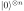, yielding a classical output 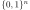 string after measurement in the standard basis.
2. Measurement-based quantum computation (MBQC) is a model for adaptive single-qubit measurements performed on a large entangled state. In this model, future operations can depend on the outcomes of intermediate measurements. Specifically, we prepare a large entangled state
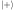 and then perform a sequence of controlled-Z
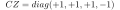 operations on pairs of qubits, according to the edge-relations of a graph (commonly, a rectangular grid or hexagonal lattice). Then, we perform a sequence of measurements on these qubits (some perhaps in the standard basis, but the majority not in the standard basis e.g. measuring observables such as
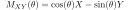). Each measurement produces  or 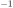 (often labelled zero or one respectively). The angle can depend on previous measurements (in a way computed by a classical control system). The final answer is calculated from the outcomes 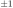 of the measurements. This model is the motivating concept behind the class IQP, which is one means of demonstrating that a quantum computer is difficult to simulate, and Blind Quantum Computing, which is one way to try to solve problems in secure computation using quantum resources. It is used in error correction.
or 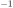 (often labelled zero or one respectively). The angle can depend on previous measurements (in a way computed by a classical control system). The final answer is calculated from the outcomes 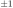 of the measurements. This model is the motivating concept behind the class IQP, which is one means of demonstrating that a quantum computer is difficult to simulate, and Blind Quantum Computing, which is one way to try to solve problems in secure computation using quantum resources. It is used in error correction.
3. Quantum annealing generalises the adiabatic model of computation. To understand it, it will help to discuss classical simulated annealing first.
Simulated annealing is a means of minimising the energy of a system, expressed in the form of a Hamiltonian:
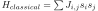
It is a random walk on the possible assignments to the local variables
The transition probability depends on:
a) the difference in energy between the configurations before and after each step of the walk
b) a temperature parameter which governs the probability with which the walk is allowed to perform a step in the random walk which has
One starts with the system at infinite temperature, which is a fancy way of saying that you allow all possible transitions, regardless of increases or decreases in energy. You then lower the temperature according to some schedule, so that as time goes on, changes in state which increase the energy become less and less likely (though still possible). The limit is zero temperature, in which any transition which decreases energy is allowed, but any transition which increases energy is simply forbidden. If you take long enough to decrease the temperature from infinite to near zero, you are guaranteed to reach the global optimum.
Quantum annealing is motivated considers what evolution occurs when one does not evolve the Hamiltonian in the adiabatic regime:
4. The adiabatic model is amenable to optimisation problems. It is based on the adiabatic theorem: if there is always an energy gap of at least 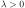 between the ground state of 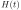 and its first excited state for all , and if, does not vary too quickly or abruptly, then the probability of getting the correct answer increases if you run the computation slowly enough.
In this model, you start with the register in some simple state such as and subject these qubits to an interaction Hamiltonian for which is the unique ground state (the state with the lowest energy). For instance, given 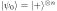, we may choose 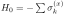
Choose a final Hamiltonian , which has a unique ground state which encodes the answer to a problem you are interested in. For instance, if you want to solve a constraint satisfaction problem, you could define a Hamiltonian
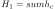, where the sum is taken over the constraints  of the classical problem, and where each is an operator which imposes an energy penalty (a positive energy contribution) to any standard basis state representing a classical assignment which does not satisfy the constraint .
of the classical problem, and where each is an operator which imposes an energy penalty (a positive energy contribution) to any standard basis state representing a classical assignment which does not satisfy the constraint .
Define a time interval 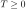 and a time-varying Hamiltonian such that 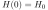 and 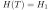. A common but not necessary choice is to simply take a linear interpolation 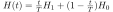
For times 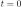 upto  , allow the system to evolve under the continuously varying Hamiltonian , and measure the qubits at the output to obtain an outcome
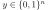
, allow the system to evolve under the continuously varying Hamiltonian , and measure the qubits at the output to obtain an outcome
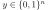
5. Random quantum walk is a quantum variation on a random walk. Whereas a classical random walker takes a step in a randomly determined direction, a quantum walker takes a step in a direction determined by a quantum coin register, which at each step is flipped by a unitary transformation rather than changed by re-sampling a random variable. The main difference between this and a random walk is that the different possible trajectories of the walker are being performed coherently in superposition, so that they can destructively interfere. This leads to a walker behaviour which is more like ballistic motion than diffusion.
[Ref: https://quantumcomputing.stackexchange.com/questions/74/what-are-the-models-of-quantum-computation]